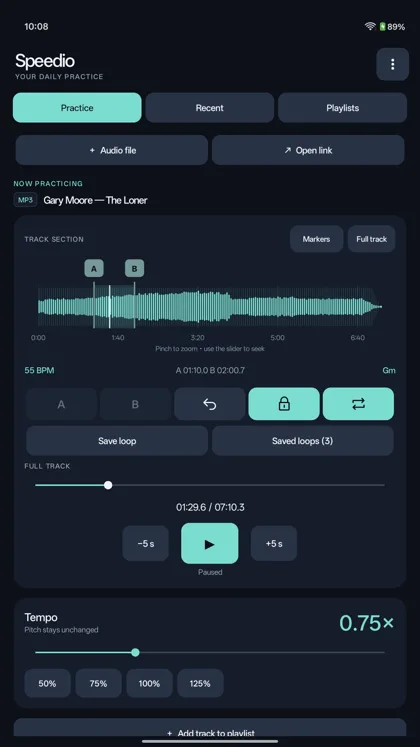

Practica a tu ritmo.
Ralentiza la música sin cambiar el tono. Speedio es un reproductor para Android pensado para guitarristas y otros músicos que aprenden de oído.


De un riff a un solo completo
Marca los puntos A y B, ponle nombre al bucle y vuelve a él en tu próxima sesión. Speedio estima el tempo (BPM) y la tonalidad de tus archivos de audio locales. También puedes abrir enlaces compatibles, incluidos los de YouTube, y crear listas de reproducción.

Aprende un solo rápido frase a frase
Abre una grabación y reduce la velocidad de un compás difícil hasta distinguir cada nota. El tono se mantiene, así que puedes tocar con la afinación original. Cuando consigas repetir la frase varias veces con precisión, sube el tempo y escucha dónde cae la última nota respecto al pulso.
Vuelve al mismo compás en la próxima sesión
Separa dos dedos sobre la línea de tiempo para colocar con precisión los extremos del bucle A–B. Bloquea los puntos mientras te mueves por la grabación. Guarda la frase como «Entrada del solo». La próxima vez, abre la canción desde el historial o una lista y elige el bucle guardado.